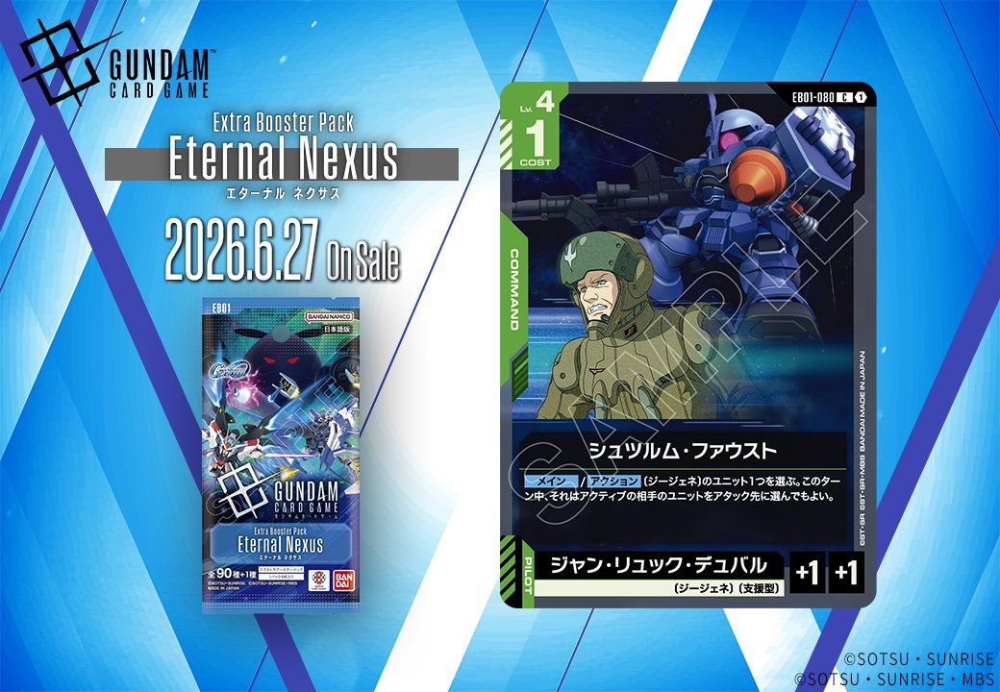
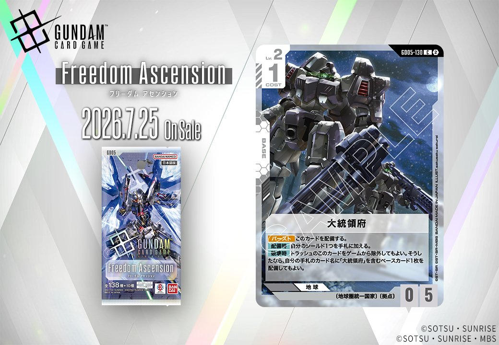
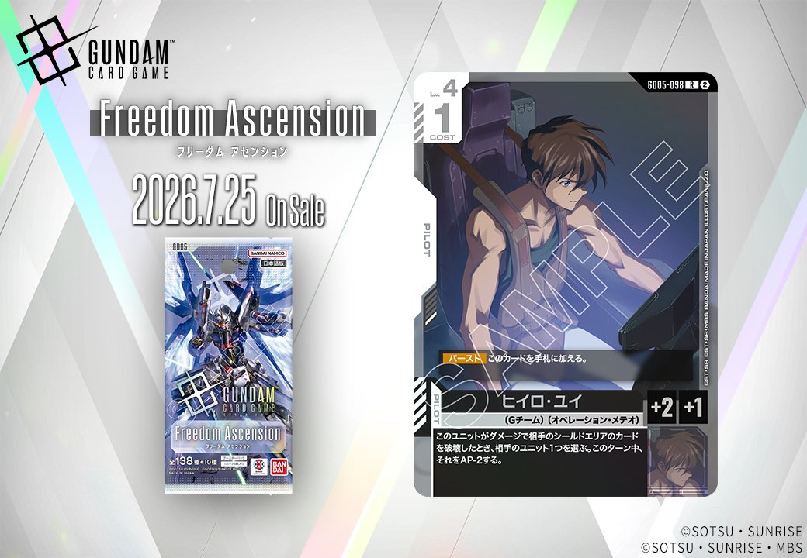
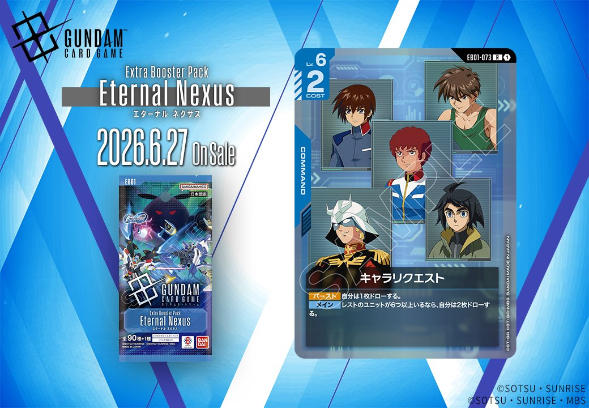
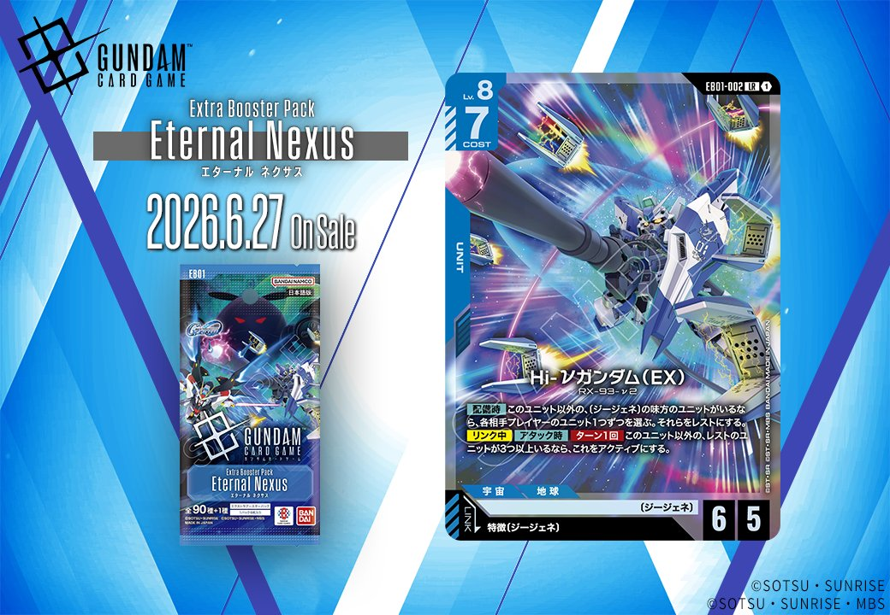

今回は、2026年6月27日発売のEB01(Eternal Nexus)から4枚、2026年7月25日発売のG005(Freedom Ascension)から3枚の計7枚の新カードが公開されました。特に注目は、G005収録の「ウイングガンダムゼロ(EW版)」と「ヒイロ・ユイ」が同日公開でリンク条件が成立する組み合わせとなっており、白のUNIT/PILOTシナジーの新たな選択肢となっています。

シュツルム・ファウスト (EB01-080)
| 色 | 緑 | タイプ | COMMAND |
| Lv | 4 | コスト | 1 |
| パイロット | ジャン・リュック・デュバル（補正 AP+1 / HP+1） 〔ジージェネ〕、〔支援型〕 | ||
効果: 【メイン】/【アクション】〔ジージェネ〕のユニット1つを選ぶ。このターン中、それはアクティブの相手のユニットをアタック先に選んでもよい。
シュツルム・ファウストは〔ジージェネ〕のユニットにアクティブの相手ユニットへのアタックを可能にするコスト1のコマンドカード。通常はレスト状態のユニットしかアタックできないため、相手の主力ユニットを狙い撃ちできる戦術的価値が高い。ウイングガンダムの効果と似た挙動を〔ジージェネ〕特徴持ちに付与でき、緑デッキの攻撃的な動きを強化する1枚。

ヅダ（1番機） (EB01-037)
| 色 | 緑 | タイプ | UNIT |
| Lv | 4 | コスト | 3 |
| AP | 4 | HP | 1 |
| 特徴 | 〔ジージェネ〕 | ||
| リンク条件 | 「ジャン・リュック・デュバル」 | ||
効果: 自分のターン中、このユニットがブロッカーを持つ相手のユニットとバトルしている間、これはバトルダメージを受けない。
ヅダ（1番機）はコスト3でAP4/HP1という攻撃特化のスタッツを持つ緑のユニット。ブロッカーを持つ相手とのバトル中にダメージを受けない能力により、一方的に相手のブロッカーユニットを破壊できる。 リンク対象の「ジャン・リュック・デュバル」と組み合わせることで、HP1の脆さをカバーしつつ、より安定した運用が期待できる。ただし非ブロッカーユニットには通常通りダメージを受けるため、相手の構成を見極めた運用が必要。

大統領府 (G005-130)
| 色 | 白 | タイプ | BASE |
| Lv | 2 | コスト | 1 |
| AP | 0 | HP | 5 |
| 特徴 | 〔地球圏統一国家〕、〔拠点〕 | ||
| リンク条件 | 「大統領府」 | ||
効果: 【バースト】 このカードを配備する。【配備時】自分のシールド1つを手札に加える。【破壊時】 トラッシュのこのカードをゲームから除外してもよい。そうしたなら、自分の手札のカード名に「大統領府」を含むベースカード1枚を配備してもよい。
白色のベースカードとして、配備時にシールドを手札に戻す効果で手札補充を行いつつ、破壊時には自身を除外して同名の「大統領府」を含むベースカードを配備できる独特な効果を持つ。コスト1でHP5という耐久力は標準的だが、破壊されても次の「大統領府」系ベースに繋げられる点で、長期戦での拠点維持に貢献する。2026年7月25日発売予定のFreedom Ascensionで登場する、〔地球圏統一国家〕の新たな拠点カードとして注目される。


ヒイロ・ユイ (G005-098)
| 色 | 白 | タイプ | PILOT |
| Lv | 4 | コスト | 1 |
| 補正 AP | 2 | 補正 HP | 1 |
| 特徴 | 〔Gチーム〕、〔オペレーションメテオ〕 | ||
効果: 【バースト】このカードを手札に加える。このユニットがダメージで相手のシールドエリアのカードを破壊したとき、相手のユニット1つを選ぶ。このターン中、それをAP-2する。
**ヒイロ・ユイ (G005-098) の考察** 白色のパイロットカードとして、【バースト】による手札補充と、シールド破壊時のAP-2デバフ効果を持つ。同日公開のウイングガンダムゼロ(EW版)とリンクすることで、ゼロの【アタック時】レスト効果で相手ユニットを無力化しつつ、《制圧》でシールドを2枚破壊し、本カードの効果で別のユニットをAP-2できる強力な連携が可能。COST1でAP2/HP1という軽量ステータスながら、相手の場を制圧する戦術的な役割を担えるパイロットだ。

ウイングガンダムゼロ(EW版) (G005-067)
| 色 | 白 | タイプ | UNIT |
| Lv | 6 | コスト | 5 |
| AP | 5 | HP | 4 |
| 特徴 | 〔Gチーム〕 | ||
| リンク条件 | 「ヒイロ・ユイ」 | ||
効果: レストの相手のユニットがいる間、これは《制圧》を得る。(《制圧》: アタックでシールドに与えるダメージは、先頭から2つに同時に与えられる) 【アタック時】相手のユニット1つを選ぶ。それをレストにする。
ウイングガンダムゼロ(EW版)は、コスト5でAP5/HP4と標準的なステータスながら、【アタック時】に相手ユニット1つをレストにする能力で能動的に《制圧》の発動条件を作れる点が優秀。ヒイロ・ユイ(G005-098)とリンクすることで、《制圧》でシールドを2枚破壊した際に【バースト】効果で相手ユニットのAPを-2でき、防御面でも貢献する。白単色や〔Gチーム〕軸のフィニッシャーとして、相手の盤面をコントロールしながら確実にシールドを削る役割が期待できる。


キャラリクエスト (EB01-073)
| 色 | 青 | タイプ | COMMAND |
| Lv | 6 | コスト | 2 |
効果: 【バースト】自分は1枚ドローする。メイン レストのユニットが6つ以上いるなら、自分は2枚ドローする。
キャラリクエスト(EB01-073)は、コスト2で1枚ドローできる基本的なドロー系コマンドカード。レストのユニットが6つ以上という条件を満たせば2枚ドローに強化されるが、この条件は多人数戦や終盤の膠着状態でないと達成が難しく、通常戦では基本的に1ドロー効果として運用することになりそう。青デッキの手札補充手段として標準的な性能だが、条件達成時の2ドローは強力なので、状況次第では大きなアドバンテージ源になり得る。

Hi-Vガンダム (EX) (EB01-002)
| 色 | 青 | タイプ | UNIT |
| Lv | 8 | コスト | 7 |
| AP | 6 | HP | 5 |
| 特徴 | 〔ジージェネ〕 | ||
| リンク条件 | 特徴にジージェネを持つPILOT | ||
効果: 【配備時】このユニット以外の、〔ジージェネ〕の味方のユニットがいるなら、各相手プレイヤーのユニット1つずつを選ぶ。それらをレストにする。【リンク中】【アタック時】ターン1回このユニット以外の、レストのユニットが3つ以上いるなら、これをアクティブにする。
Hi-Vガンダム (EX)は青Lv.8の〔ジージェネ〕ユニットで、配備時に味方の〔ジージェネ〕ユニットがいれば各相手プレイヤーのユニット1つずつをレストにする強力な除去効果を持つ。リンク中はアタック時にレストユニットが3つ以上いればターン1回自身をアクティブにでき、連続アタックによる高い制圧力を発揮する。COST7/AP6/HP5のスタッツは標準的だが、〔ジージェネ〕特化デッキでの運用により、相手の盤面をコントロールしながら攻撃的な展開が可能な1枚。


関連カード
-
 ウイングガンダムゼロ(GD01-024)緑系デッキ内採用率16.3% (520デッキ)
ウイングガンダムゼロ(GD01-024)緑系デッキ内採用率16.3% (520デッキ) -
 ウイングガンダム(ST02-001)緑系デッキ内採用率15.6% (497デッキ)
ウイングガンダム(ST02-001)緑系デッキ内採用率15.6% (497デッキ) -
 ヒイロ・ユイ(ST02-010)緑系デッキ内採用率15.6% (495デッキ)
ヒイロ・ユイ(ST02-010)緑系デッキ内採用率15.6% (495デッキ) -
 ピースミリオン(GD03-125)緑系デッキ内採用率15% (477デッキ)
ピースミリオン(GD03-125)緑系デッキ内採用率15% (477デッキ) -
 ザクⅡ(ST03-008)緑系デッキ内採用率13% (415デッキ)
ザクⅡ(ST03-008)緑系デッキ内採用率13% (415デッキ) -
 オプションパーツ(EB01-079)NEW緑系 — 同色・共通特徴: ジージェネ（新カード）
オプションパーツ(EB01-079)NEW緑系 — 同色・共通特徴: ジージェネ（新カード） -
インダストリアル7(GD04-130)白系デッキ内採用率1% (32デッキ)
-
 溢れる慈愛(GD01-118)白系デッキ内採用率39.6% (1260デッキ)
溢れる慈愛(GD01-118)白系デッキ内採用率39.6% (1260デッキ) -
 ガンダム・ルブリス(GD01-086)白系デッキ内採用率37.3% (1186デッキ)
ガンダム・ルブリス(GD01-086)白系デッキ内採用率37.3% (1186デッキ) -
 エールストライクガンダム(ST04-001)白系デッキ内採用率35.7% (1136デッキ)
エールストライクガンダム(ST04-001)白系デッキ内採用率35.7% (1136デッキ)
出典:
- https://x.com/GUNDAM_GCG_JP/status/2063176567786709135
- https://x.com/GUNDAM_GCG_JP/status/2063169024209330622
- https://x.com/GUNDAM_GCG_JP/status/2062864511020011713
- https://x.com/GUNDAM_GCG_JP/status/2062863252699119680
- https://x.com/GUNDAM_GCG_JP/status/2062861994315616705
- https://x.com/GUNDAM_GCG_JP/status/2062836839963410713
- https://x.com/GUNDAM_GCG_JP/status/2062829280565055569